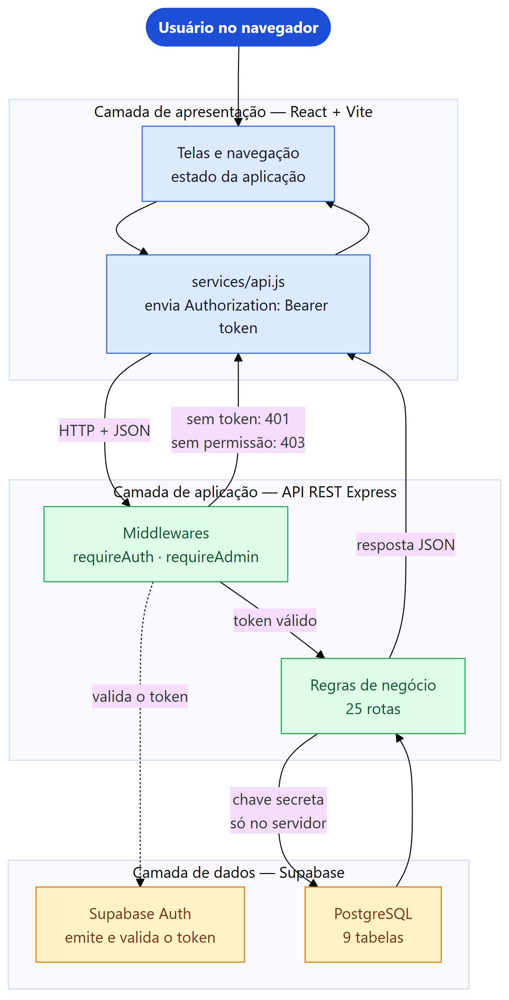
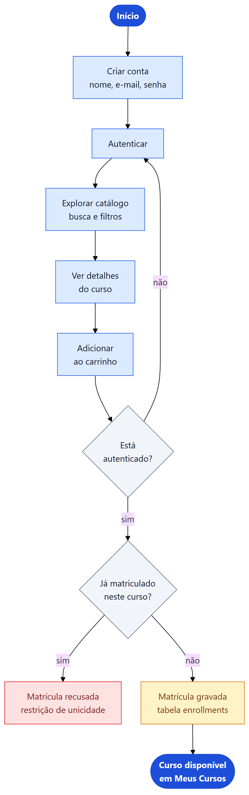
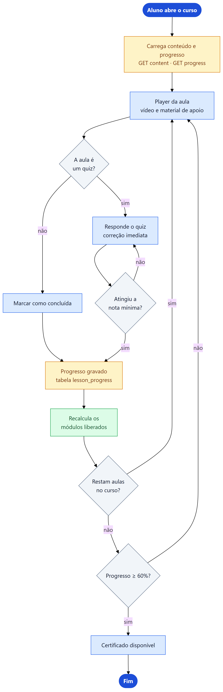
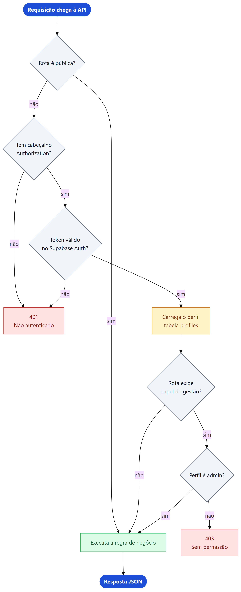
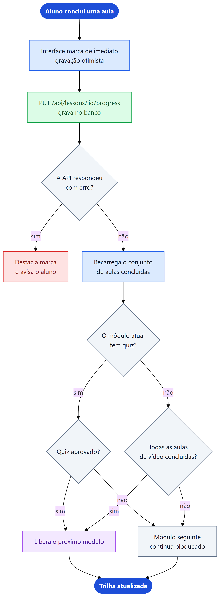
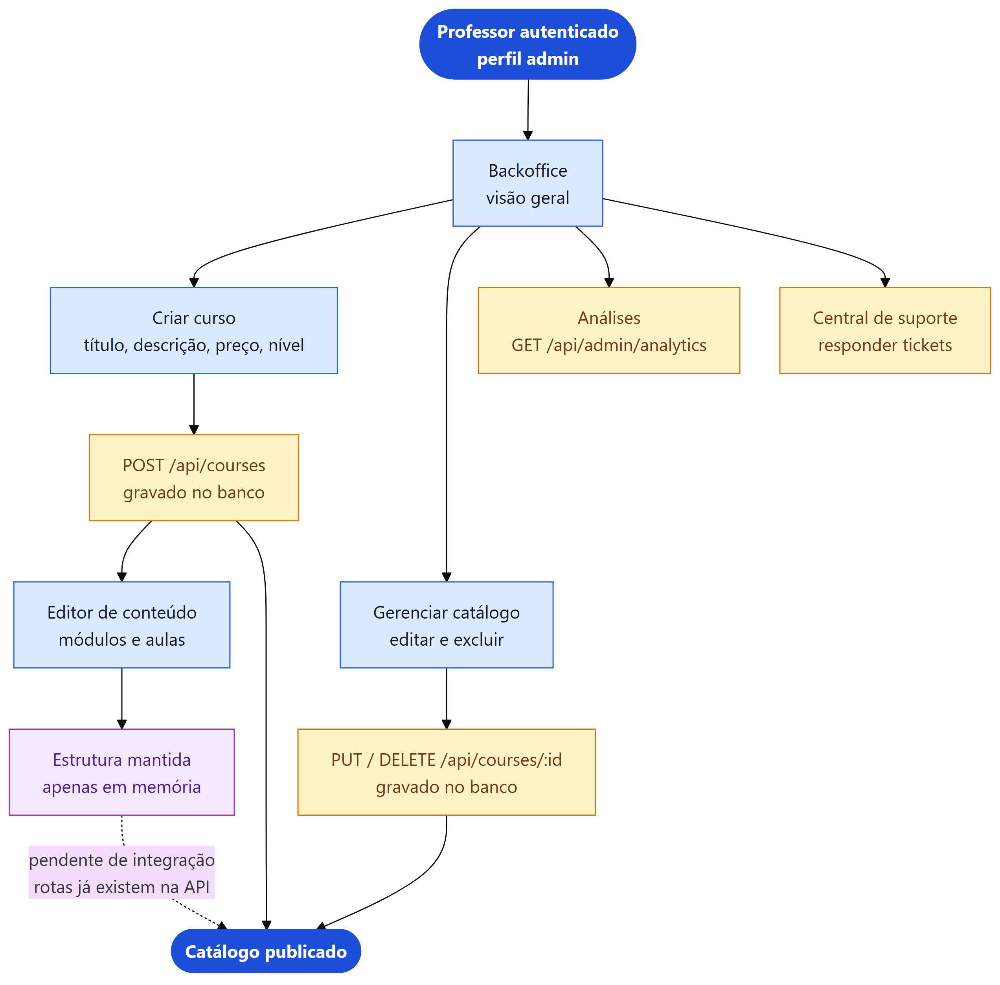

Este documento reúne os seis fluxogramas que descrevem o funcionamento do CursoLab. Todos foram elaborados a partir do sistema em execução, e não de uma especificação prévia: representam o comportamento efetivamente implementado.
A mesma legenda vale para todos os diagramas deste documento.
| Cor | Camada ou situação representada |
|---|---|
| Azul | Camada de apresentação — o que ocorre no navegador |
| Verde | Camada de aplicação — regras de negócio executadas na API |
| Amarelo | Camada de dados — informação gravada no PostgreSQL |
| Roxo | Estado mantido apenas em memória, perdido ao recarregar a página |
| Vermelho | Caminho de erro ou operação recusada |
| Cinza | Ponto de decisão |
A distinção entre amarelo e roxo é a mais relevante para a leitura: ela separa o que sobrevive ao recarregamento da página do que ainda depende de integração com a API.
O diagrama a seguir apresenta as três camadas do sistema e o trajeto completo de uma requisição, desde a ação do usuário até o banco de dados e de volta à interface. A chave secreta de acesso ao banco permanece exclusivamente na camada de aplicação e nunca é enviada ao navegador.

Figura 1 - Arquitetura em camadas e trajeto de uma requisição
A jornada do aluno foi dividida em duas etapas. A primeira cobre a descoberta do curso e a matrícula. O sistema exige autenticação antes de concluir a matrícula e recusa uma segunda matrícula no mesmo curso, restrição garantida pela unicidade do par aluno-curso no banco.

Figura 2 - Jornada do aluno: descoberta e matrícula
A segunda etapa cobre o consumo do conteúdo. Cada aula segue um de dois caminhos, conforme seja uma aula em vídeo ou um quiz. Em ambos os casos, a conclusão é gravada no banco antes de a trilha ser recalculada.

Figura 3 - Jornada do aluno: aprendizado e certificado
O controle de acesso é aplicado no servidor, por dois middlewares encadeados. A verificação ocorre onde o cliente não alcança: ocultar um elemento na interface não constitui controle de acesso, pois a requisição poderia ser enviada diretamente à API.

Figura 4 - Decisão entre executar, recusar por autenticação ou por permissão
Esta é a regra de negócio central do sistema. Dois aspectos do diagrama merecem destaque.
O primeiro é que os módulos liberados não são gravados no banco. Eles são derivados do conjunto de aulas concluídas e recalculados a cada carregamento. Persistir as duas informações criaria um segundo estado capaz de divergir do primeiro.
O segundo é a gravação otimista: a interface marca a aula imediatamente e desfaz a marca caso a API responda com erro, de modo que o aluno nunca veja um progresso que o banco não registrou.

Figura 5 - Regra de progressão e desbloqueio de módulos
O último diagrama descreve o backoffice. A criação de cursos, o gerenciamento do catálogo, os indicadores e a central de suporte operam de ponta a ponta, com gravação no banco.
O editor de conteúdo aparece em roxo porque mantém módulos e aulas apenas em memória. As rotas correspondentes já existem e estão protegidas na API; falta a interface passar a chamá-las. O trabalho restante é de integração, não de concepção.

Figura 6 - Fluxo do professor no backoffice administrativo